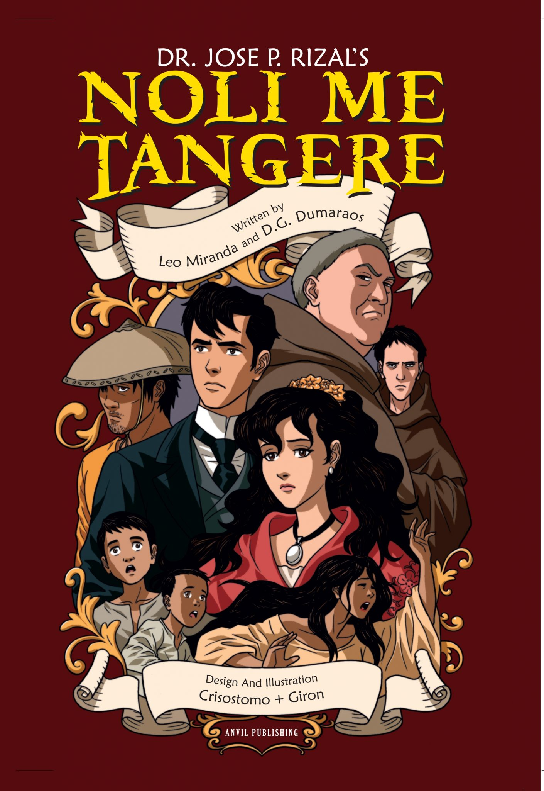

Talambuhay ni Rizal
Si Jose Protacio Rizal Mercao Y Alonso Realonda o mas kilala bilang Dr. Jose Rizal ay isinilang noong Hunyo 19, 1861 sa Calamba, Laguna.Sa labing-isang magkakapatid si Rizal ang ika-pitong anak ng mag-aswang Francisco Mercado at Teodora Alonso. Isa si Dr. Jose Rizal sa mga Pilipinong nagdulot ng pagbabago sa bansang Pilipinas na mahigit 300 daang taong napasailalim sa pananakop ng mga Espanyol
Si Dr. Jose Rizal ay kilala rin bilang Pepe. Sa bata niyang edad, matalino na talaga si Pepe, hindi man katangkaran at kalakasan ang kaniyang katawan siya ay lumaki pa rin bilang isang normal na bata na nagmula sa pamilyang medyo nakaririwasa.
Sumasang-ayon sa ilang mga dalubhasa, tunay na nadama niya ang pagkagarote sa tatlong paring martir na sina Padre Gomez, Padre Burgos, at Padre Zamora. Binitay sila noong Pebrero 17, 1872 para sa pakikipagtulungan sa mga rebelde upang maisakatuparan ang Rebelyon ng Cavite. Sa mga na iyon si Pepe ay tulad ng halos sampu sa mahabang panahon. Ang mga indibiduwal ay may labis na pagkakaiba sa nangyari sa tatlong pari. Ito ang dahilan kaya niya nagawa ang nobela na El Filibusterismo, sa tatlong kleriko.
Nagkaroon din ng usap-usapin tungkol sa apelyido nina Pepe. Bagama't dala ng pamilya nila ang apelyidong Mercado at pinapalitan ito ni Gobernador Heneral Claveria noong 1841 ng pang-Espanyol na apelyido. Kaya sinubukan nilang gamitin ang apelyidong Rizal, dahil sa hindi ito nakabubuti sa kanilang negosyo ang pagpapalit ng apelyido ay ginawa na lamang nila itong RIzal Mercado. Nang mag- aaral na si Pepe sa Ateneo Municipal de Manila ay pinayuhan siyan ng kanyang nakatatandang kapatid na na Rizal na lamang ang kaniyang gamitin upang maiwasan ang kaguluhan sa isa pa nilang apelyido.
Matapos ng lahat ng nangyari ay isa na naman masalimuot na pangyayari ang kinabilangan ng kanilang pamilya. Ang kaniyang ina na si Teodora Alonso o kilala din bilang Donya Lolay at mayroong kapatid na nagngangalang Jose Alberto. Sapagkat balak nitong lasunin ang asawa ni Jose Alberto, sa bandang huli ay isinuplong ang magkapatid sa pulis dahil sa planong iyon. Bilang kaparusahan ay pinaglakad mula Laguna hanggang Maynila si Donya Lolay at nakulong din ito. Kahit anong sagana ng pamilya nila ay hindi pa rin nila nailigtas ang kanilang ina sa paghihirap na kinakaharap nila.
1882 noong nagpunta si Pepe sa Madrid upang magkaroon pa ng maraming kaalaman na nakuha niya mula sa Unibersidad ng Santo Tomas. Doon niya natuklasan ang iba't ibang uri ng pamumuhay ng mga Espanyol. Bagama't mayroong mahihirap at mayayaman na Espanyol ay hindi naman sila nakakaranas ng mga paghihirap na nararanasan ng mga Pilipino. Lubos na pinagtakhan ni Pepe ay kung bakit pakiramdam niya ay isa siyang malayang tao na nakatira sa nasasakupan ng Hari ng Espanya. Dahil sa pagpunta niya sa Espanya ay nakabasa siya ng mga aklat tungkol sa kaapihan tulad na lamang ng Florante at Laura at Uncle Tom's Cabin. Dahil sa mga aklat na ito ay mas higit niyang natutunan ang ibig sabihin ng salitang malaya, na kahit kailangan ay hindi niya ito nakita sa sarili niyang bansa. Dahil doon ay nagtayo siya ng samahan kasama ang kapwa niya matatalinong Pilipino na tinawag niyang La Liga Filipino. At gumawa sila ng pahayagang pinangalanan nilang La Solidaridad.
Ang mga pangyayari sa kanilang buhay ang nagudyok sa kaniya upang maisulat niya ang kaniyang nobela na magsisiwalat ng masasamang palakad sa Pilipinas. Noong una niya itong ginawa, inaatasan niyang kapag nabasa iyon ng mga Espanyol ay magkakaroon ng reporma sa Pilipinas at hihina ang kapangyarihan ng mga prayle. Ang orihinal na manuskrito ng Noli Me Tangere ay nasa wikang Espanyol. Ang nababasa natin na nasa wikang Filipino ngayon ay pawang mga pagsasalin na lamang. Isinalin rin ang kaniyang mga Nobela sa iba't ibang wika upang mapanatiling buhay ang ideolohiyang naging mitsa ng kalayaan ng ating bansa.
Personal na Impormasyon

- BUONG PANGALAN:
- Dr. Jose Protacio Rizal Mercado Y Alonso Realonda
- PALAYAW:
- Pepe, Jose
- ARAW NG KAPANGANAKAN:
- June 19, 1861
- LUGAR NG KAPANGANAKAN:
- Calamba, Laguna
- ARAW NG KAMATAYAN:
- December 30, 1896
- LUGAR NG KAMATAYAN:
- Bagumbayan, Manila
- MGA PAARALANG KANIYANG NAPASUKAN:
- Ateneo Municipal de Manila
- Unibersidad Central de Madrid
- University of Santo Tomas
- ORGANISASYONG KANIYANG GINAWA:
- La Liga Filipina
- PAHAYAGANG KANILANG GINAWA:
- La Solidaridad
- ASAWA:
- Josephine Bracken
- MGA MAGULANG:
- Francisco Rizal Mercado (ama)
- Teodora Alonso Realonda (ina)
Ilan sa Mga Aklat ni Dr. Jose Rizal
Noli Me Tangere
El Filibusterismo

Makamisa
The Reign of Greed